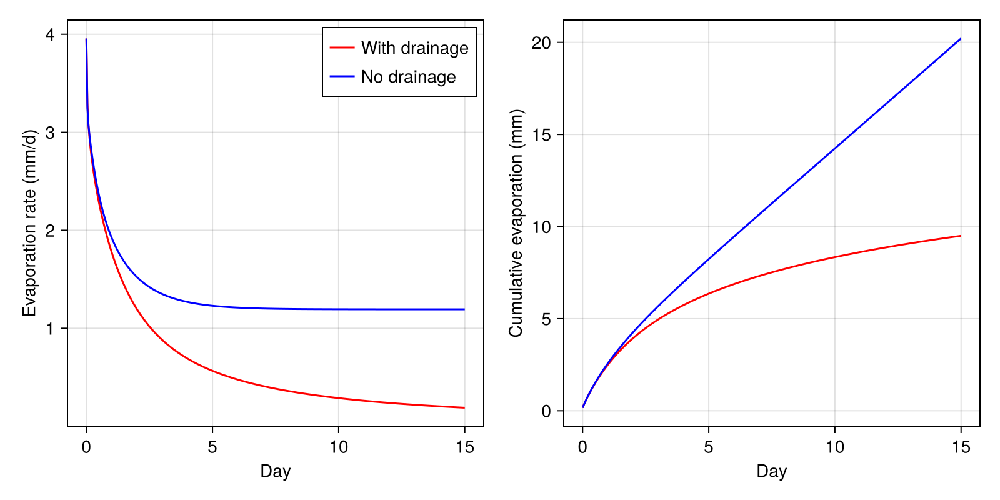
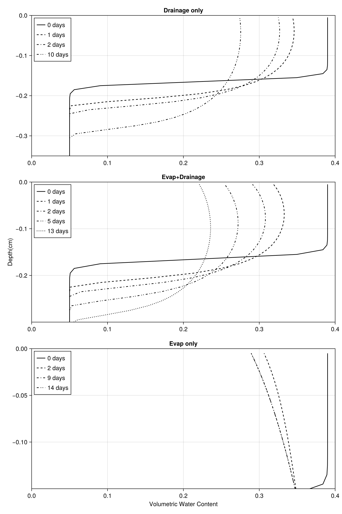

This sets up the simulation that mimicks the lab experiment presented in Gardener 1970b and modeled also by Lehmann and Or, 2024.
For further details on how to setup a simulation, please see our other Soil tutorials. This one is very terse and does not provide complete explanations
The same experiment is carried out 3 times
- No evaporation (zero flux boundary conditions)
- With evaporation but no drainage (Ksat = 0)
- With evaporation and drainage
using CairoMakie
import SciMLBase
import ClimaTimeSteppers as CTS
using Thermodynamics
using ClimaCore
import ClimaParams as CP
using SurfaceFluxes
using StaticArrays
using Dates
using DelimitedFiles: readdlm
using ClimaLand
using ClimaLand.Domains: Column
using ClimaLand.Soil
import ClimaLand
import ClimaLand.Parameters as LP
import ClimaLand.Simulations: LandSimulation, solve!
import SurfaceFluxes.Parameters as SFP
FT = Float64;
earth_param_set = LP.LandParameters(FT)
thermo_params = LP.thermodynamic_parameters(earth_param_set);Parameters
K_sat = FT(0.01 / 3600 / 24)
vg_n = FT(1.55)
vg_α = FT(1.5)
hcm = vanGenuchten{FT}(; α = vg_α, n = vg_n)
ν = FT(0.4)
θ_r = FT(0.04)
S_s = FT(1e-3)
ν_ss_om = FT(0.0)
ν_ss_quartz = FT(0.3)
ν_ss_gravel = FT(0.0)
emissivity = FT(1.0)
z_0m = FT(1e-3)
z_0b = FT(1e-4)
d_ds = FT(0.01)# 10mm
params = ClimaLand.Soil.EnergyHydrologyParameters(
FT;
ν,
ν_ss_om,
ν_ss_quartz,
ν_ss_gravel,
hydrology_cm = hcm,
K_sat,
S_s,
θ_r,
emissivity,
z_0m,
z_0b,
earth_param_set,
d_ds,
);
start_date = DateTime(2005)
stop_date = start_date + Day(15)
dt = Float64(900.0)
SW_d = (t) -> 0
LW_d = (t) -> 294.15^4 * 5.67e-8
radiation = PrescribedRadiativeFluxes(
FT,
TimeVaryingInput(SW_d),
TimeVaryingInput(LW_d),
start_date,
)PrescribedRadiativeFluxes{Float64, ClimaUtilitiesClimaCoreNCDatasetsExt.TimeVaryingInputsExt.AnalyticTimeVaryingInput{Main.var"##308".var"#1#2"}, Nothing, ClimaUtilitiesClimaCoreNCDatasetsExt.TimeVaryingInputsExt.AnalyticTimeVaryingInput{Main.var"##308".var"#3#4"}, Dates.DateTime, Nothing, Nothing}(ClimaUtilitiesClimaCoreNCDatasetsExt.TimeVaryingInputsExt.AnalyticTimeVaryingInput{Main.var"##308".var"#1#2"}(Main.var"##308".var"#1#2"()), nothing, ClimaUtilitiesClimaCoreNCDatasetsExt.TimeVaryingInputsExt.AnalyticTimeVaryingInput{Main.var"##308".var"#3#4"}(Main.var"##308".var"#3#4"()), Dates.DateTime("2005-01-01T00:00:00"), nothing, nothing)Atmos
T_air = FT(301.15)
rh = FT(0.38)
esat = Thermodynamics.saturation_vapor_pressure(
thermo_params,
T_air,
Thermodynamics.Liquid(),
)
e = rh * esat
q = FT(0.622 * e / (101325 - 0.378 * e))
precip = (t) -> 0.0
T_atmos = (t) -> T_air
u_atmos = (t) -> 1.0
q_atmos = (t) -> q
h_atmos = FT(0.1)
P_atmos = (t) -> 101325
gustiness = FT(1e-2)
atmos = PrescribedAtmosphere(
TimeVaryingInput(precip),
TimeVaryingInput(precip),
TimeVaryingInput(T_atmos),
TimeVaryingInput(u_atmos),
TimeVaryingInput(q_atmos),
TimeVaryingInput(P_atmos),
start_date,
h_atmos,
earth_param_set;
gustiness = gustiness,
)PrescribedAtmosphere{Float64, ClimaUtilitiesClimaCoreNCDatasetsExt.TimeVaryingInputsExt.AnalyticTimeVaryingInput{Main.var"##308".var"#5#6"}, ClimaUtilitiesClimaCoreNCDatasetsExt.TimeVaryingInputsExt.AnalyticTimeVaryingInput{Main.var"##308".var"#5#6"}, ClimaUtilitiesClimaCoreNCDatasetsExt.TimeVaryingInputsExt.AnalyticTimeVaryingInput{Main.var"##308".var"#7#8"}, ClimaUtilitiesClimaCoreNCDatasetsExt.TimeVaryingInputsExt.AnalyticTimeVaryingInput{Main.var"##308".var"#9#10"}, ClimaUtilitiesClimaCoreNCDatasetsExt.TimeVaryingInputsExt.AnalyticTimeVaryingInput{Main.var"##308".var"#11#12"}, ClimaUtilitiesClimaCoreNCDatasetsExt.TimeVaryingInputsExt.AnalyticTimeVaryingInput{Main.var"##308".var"#13#14"}, ClimaUtilitiesClimaCoreNCDatasetsExt.TimeVaryingInputsExt.AnalyticTimeVaryingInput{ClimaLand.var"#56#59"}, Dates.DateTime, Thermodynamics.Parameters.ThermodynamicsParameters{Float64}}(ClimaUtilitiesClimaCoreNCDatasetsExt.TimeVaryingInputsExt.AnalyticTimeVaryingInput{Main.var"##308".var"#5#6"}(Main.var"##308".var"#5#6"()), ClimaUtilitiesClimaCoreNCDatasetsExt.TimeVaryingInputsExt.AnalyticTimeVaryingInput{Main.var"##308".var"#5#6"}(Main.var"##308".var"#5#6"()), ClimaUtilitiesClimaCoreNCDatasetsExt.TimeVaryingInputsExt.AnalyticTimeVaryingInput{Main.var"##308".var"#7#8"}(Main.var"##308".var"#7#8"()), ClimaUtilitiesClimaCoreNCDatasetsExt.TimeVaryingInputsExt.AnalyticTimeVaryingInput{Main.var"##308".var"#9#10"}(Main.var"##308".var"#9#10"()), ClimaUtilitiesClimaCoreNCDatasetsExt.TimeVaryingInputsExt.AnalyticTimeVaryingInput{Main.var"##308".var"#11#12"}(Main.var"##308".var"#11#12"()), ClimaUtilitiesClimaCoreNCDatasetsExt.TimeVaryingInputsExt.AnalyticTimeVaryingInput{Main.var"##308".var"#13#14"}(Main.var"##308".var"#13#14"()), ClimaUtilitiesClimaCoreNCDatasetsExt.TimeVaryingInputsExt.AnalyticTimeVaryingInput{ClimaLand.var"#56#59"}(ClimaLand.var"#56#59"()), Dates.DateTime("2005-01-01T00:00:00"), 0.1, 0.01, Thermodynamics.Parameters.ThermodynamicsParameters{Float64}(273.16, 101325.0, 100000.0, 287.0, 461.5, 1004.5, 1859.0, 4181.0, 2070.0, 2.5008e6, 2.8344e6, 611.657, 273.16, 273.15, 1.0, 1000.0, 150.0, 298.15, 6864.8, 10513.6, 8.3144598, 0.02897, 0.01801528, 290.0, 220.0, 9.81, 233.0, 1.0))Simulation setup - no evaporation Boundary conditions
zero_water_flux = WaterFluxBC((p, t) -> 0)
zero_heat_flux = HeatFluxBC((p, t) -> 0)
no_flux_boundary_fluxes = (;
top = WaterHeatBC(; water = zero_water_flux, heat = zero_heat_flux),
bottom = WaterHeatBC(; water = zero_water_flux, heat = zero_heat_flux),
);
Δz = 0.01
zmax = FT(0)
zmin = FT(-1.6)
nelems = Int((zmax - zmin) / Δz)
soil_domain = Column(; zlim = (zmin, zmax), nelements = nelems)
z = ClimaCore.Fields.coordinate_field(soil_domain.space.subsurface).z
soil = Soil.EnergyHydrology{FT}(;
parameters = params,
domain = soil_domain,
boundary_conditions = no_flux_boundary_fluxes,
sources = (),
);Initial conditions
function estimated_ic(z)
0.34 / (1 + exp(-(z + 0.165) / 0.005)) + 0.05
end
function set_ic!(Y, p, t0, model)
params = model.parameters
z = model.domain.fields.z
FT = eltype(Y.soil.ϑ_l)
Y.soil.ϑ_l .= estimated_ic.(z)
Y.soil.θ_i .= 0
T = FT(294.15)
ρc_s = @. Soil.volumetric_heat_capacity(
Y.soil.ϑ_l,
Y.soil.θ_i,
params.ρc_ds,
params.earth_param_set,
)
Y.soil.ρe_int =
Soil.volumetric_internal_energy.(
Y.soil.θ_i,
ρc_s,
T,
params.earth_param_set,
)
end
timestepper = CTS.ARS111();
ode_algo = CTS.IMEXAlgorithm(
timestepper,
CTS.NewtonsMethod(
max_iters = 1,
update_j = CTS.UpdateEvery(CTS.NewNewtonIteration),
),
);Saving callback
saveat = Array(start_date:Hour(1):stop_date);
sv = (;
t = Array{DateTime}(undef, length(saveat)),
saveval = Array{NamedTuple}(undef, length(saveat)),
)
saving_cb = ClimaLand.NonInterpSavingCallback(sv, saveat)
cb = SciMLBase.CallbackSet(saving_cb);
simulation = LandSimulation(
start_date,
stop_date,
dt,
soil;
set_ic! = set_ic!,
updateat = [],
solver_kwargs = (; saveat = deepcopy(saveat)),
timestepper = ode_algo,
user_callbacks = (saving_cb,),
diagnostics = (),
);
sol_no_evap = solve!(simulation);Repeat with evaporation and drainage This requires different initial conditions
top_bc = ClimaLand.Soil.AtmosDrivenFluxBC(atmos, radiation)
evap_boundary_fluxes = (;
top = top_bc,
bottom = WaterHeatBC(; water = zero_water_flux, heat = zero_heat_flux),
)
soil = Soil.EnergyHydrology{FT}(;
parameters = params,
domain = soil_domain,
boundary_conditions = evap_boundary_fluxes,
sources = (),
)
timestepper = CTS.ARS111();
saveat = Array(start_date:Hour(1):stop_date);
sv = (;
t = Array{DateTime}(undef, length(saveat)),
saveval = Array{NamedTuple}(undef, length(saveat)),
)
saving_cb = ClimaLand.NonInterpSavingCallback(sv, saveat)
updateat = deepcopy(saveat)
simulation = LandSimulation(
start_date,
stop_date,
dt,
soil;
set_ic! = set_ic!,
updateat = updateat,
solver_kwargs = (; saveat = deepcopy(saveat)),
timestepper = ode_algo,
user_callbacks = (saving_cb,),
diagnostics = (),
);
sol = solve!(simulation);
evap = [
parent(sv.saveval[k].soil.turbulent_fluxes.vapor_flux_liq)[1] for
k in 1:length(sol.t)
];
# Repeat with no drainage (Ksat = 0, different BC), and with evaporation, in shorter domain[ Info: Warning: No runoff model was provided; zero runoff generated.
This requires different boundary conditions yet again: Wet boundary at bottom, zero heat flux at bottom, the previously defined atmos driven evaporation at the top.
bottom_water_bc = MoistureStateBC((p, t) -> 0.35)
no_drainage_boundary_fluxes = (;
top = top_bc,
bottom = WaterHeatBC(; water = bottom_water_bc, heat = zero_heat_flux),
)
zmax = FT(0)
zmin = FT(-0.16)
nelems = Int((zmax - zmin) / Δz)
dt = Float64(10.0)
soil_domain = Column(; zlim = (zmin, zmax), nelements = nelems)
z_no_evap = ClimaCore.Fields.coordinate_field(soil_domain.space.subsurface).z
soil = Soil.EnergyHydrology{FT}(;
parameters = params,
domain = soil_domain,
boundary_conditions = no_drainage_boundary_fluxes,
sources = (),
)
saveat = Array(start_date:Hour(1):stop_date);
sv = (;
t = Array{DateTime}(undef, length(saveat)),
saveval = Array{NamedTuple}(undef, length(saveat)),
)
saving_cb = ClimaLand.NonInterpSavingCallback(sv, saveat)
updateat = deepcopy(saveat)
simulation = LandSimulation(
start_date,
stop_date,
dt,
soil;
set_ic! = set_ic!,
updateat = updateat,
solver_kwargs = (; saveat = deepcopy(saveat)),
timestepper = ode_algo,
user_callbacks = (saving_cb,),
diagnostics = (),
);
sol_no_drainage = solve!(simulation);
evap_no_drainage = [
parent(sv.saveval[k].soil.turbulent_fluxes.vapor_flux_liq)[1] for
k in 1:length(sol.t)
];Figures
fig = Figure(size = (800, 400))
ax = Axis(fig[1, 1], xlabel = "Day", ylabel = "Evaporation rate (mm/d)")
CairoMakie.lines!(
ax,
FT.(sol.t) ./ 3600 ./ 24,
evap .* (1000 * 3600 * 24),
label = "With drainage",
color = :red,
)
CairoMakie.lines!(
ax,
FT.(sol_no_drainage.t) ./ 3600 ./ 24,
evap_no_drainage .* (1000 * 3600 * 24),
label = "No drainage",
color = :blue,
)
CairoMakie.axislegend(ax)
ax2 = Axis(fig[1, 2], xlabel = "Day", ylabel = "Cumulative evaporation (mm)")
CairoMakie.lines!(
ax2,
FT.(sol.t) ./ 3600 ./ 24,
cumsum(evap) .* (1000 * 3600),
color = :red,
)
CairoMakie.lines!(
ax2,
FT.(sol_no_drainage.t) ./ 3600 ./ 24,
cumsum(evap_no_drainage) .* (1000 * 3600),
color = :blue,
)
save("evaporation_lehmann2024_figS6.png", fig);
fig2 = Figure(size = (800, 1200))
ax1 = Axis(fig2[1, 1], title = "Drainage only")
CairoMakie.ylims!(-0.35, 0)
CairoMakie.xlims!(0.0, 0.4)
linestyles = [:solid, :dash, :dashdot, :dashdotdot, :dot]
days = [0, 1, 2, 10]
for i in 1:1:4
CairoMakie.lines!(
ax1,
parent(sol_no_evap.u[days[i] * 24 + 1].soil.ϑ_l)[:],
parent(z)[:],
label = "$(days[i]) days",
color = :black,
linestyle = linestyles[i],
)
end
ax2 = Axis(fig2[2, 1], title = "Evap+Drainage", ylabel = "Depth(cm)")
CairoMakie.ylims!(-0.3, 0)
CairoMakie.xlims!(0.0, 0.4)
days = [0, 1, 2, 5, 13]
for i in 1:1:5
CairoMakie.lines!(
ax2,
parent(sol.u[days[i] * 24 + 1].soil.ϑ_l)[:],
parent(z)[:],
label = "$(days[i]) days",
color = :black,
linestyle = linestyles[i],
)
end
ax3 = Axis(fig2[3, 1], title = "Evap only", xlabel = "Volumetric Water Content")
CairoMakie.ylims!(-0.15, 0)
CairoMakie.xlims!(0.0, 0.4)
days = [0, 2, 9, 14]
for i in 1:1:4
CairoMakie.lines!(
ax3,
parent(sol_no_drainage.u[days[i] * 24 + 1].soil.ϑ_l)[:],
label = "$(days[i]) days",
parent(z_no_evap)[:],
color = :black,
linestyle = linestyles[i],
)
end
CairoMakie.axislegend(ax3, position = :lt)
CairoMakie.axislegend(ax2, position = :lt)
CairoMakie.axislegend(ax1, position = :lt)
save("evaporation_gardner_fig1.png", fig2);
This page was generated using Literate.jl.